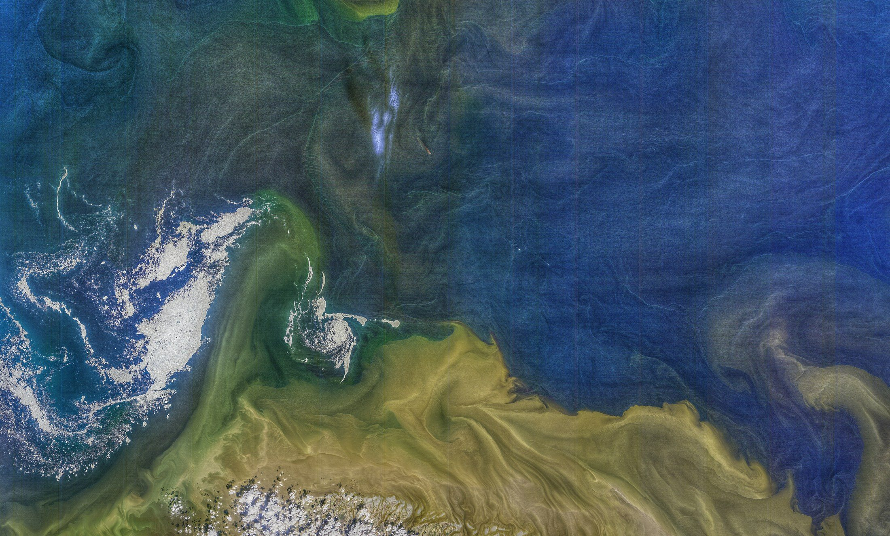
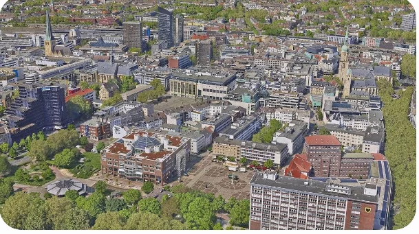
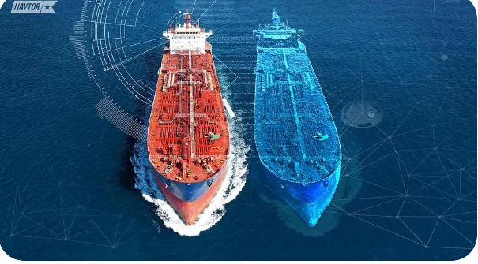
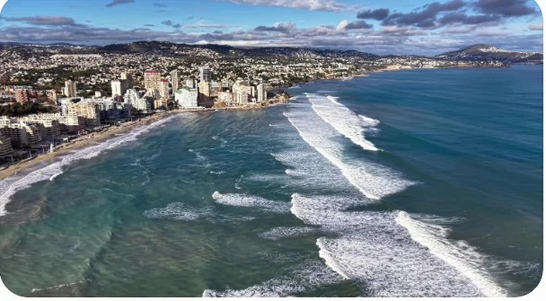
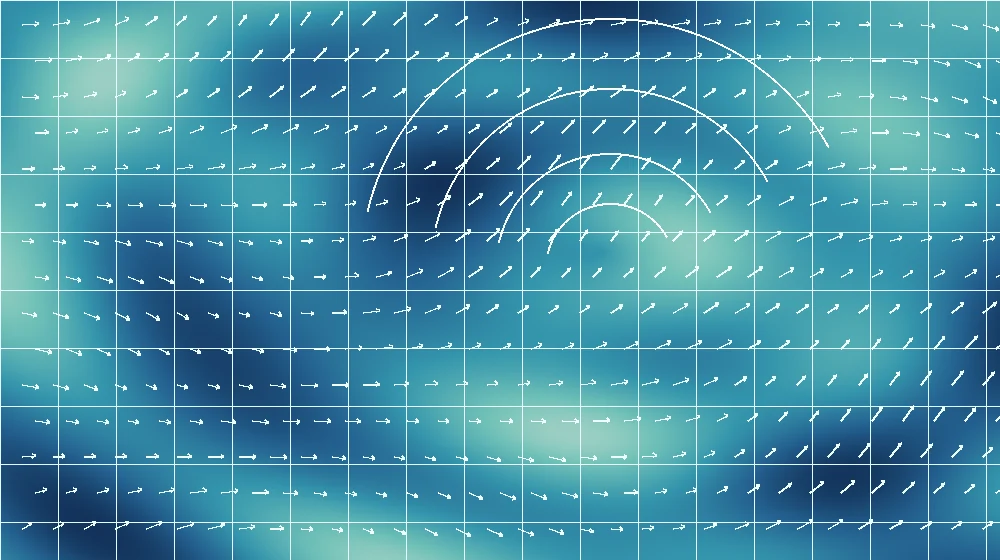

Reconstruct.
Recover the structure and state of the world from observations.

GEOSPATIAL WORLD MODELS
Connecting spatial intelligence, generative modeling, and physical simulation to explore the world beyond observation.
Explore our researchThe world is spatial, dynamic, and interconnected. Understanding it calls for models that bring geometry, appearance, motion, and physical processes together.
GeoX explores this shared foundation through four complementary research directions — from reconstructed scenes to simulated environments.
Recover the structure and state of the world from observations.
Explore new scenes and dynamic visual worlds through generative models.
Model how environments evolve across space, time, and physical processes.
Across geometry, oceans, motion, and physics. Explore the questions that connect our research.

SPATIAL INTELLIGENCE
Exploring 3D reconstruction, scene generation, and spatial representations for geospatial environments across scales.

MARITIME INTELLIGENCE
Studying world modeling, dynamic evolution, and scenario simulation for maritime and complex coastal environments.

DYNAMIC VISUAL WORLDS
Exploring video generation and spatiotemporal modeling for aerial imagery and other dynamic visual environments.

PHYSICAL ENVIRONMENTS
Investigating the reconstruction, super-resolution, and dynamic modeling of wind fields and other physical environments.
GeoX is a collaborative research initiative for geospatial world models. We connect research in 3D reconstruction and generation, maritime modeling, video generation, and physical environments.
A shared vision brings these directions together: developing richer representations of our world and exploring how it can be reconstructed, generated, and simulated.
Discover GeoX on GitHubSPACE × TIME × PHYSICS
FOLLOW THE EXPLORATION
Explore our research initiative and follow future resources on GitHub.
Visit our GitHub